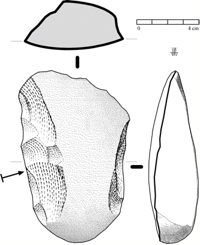
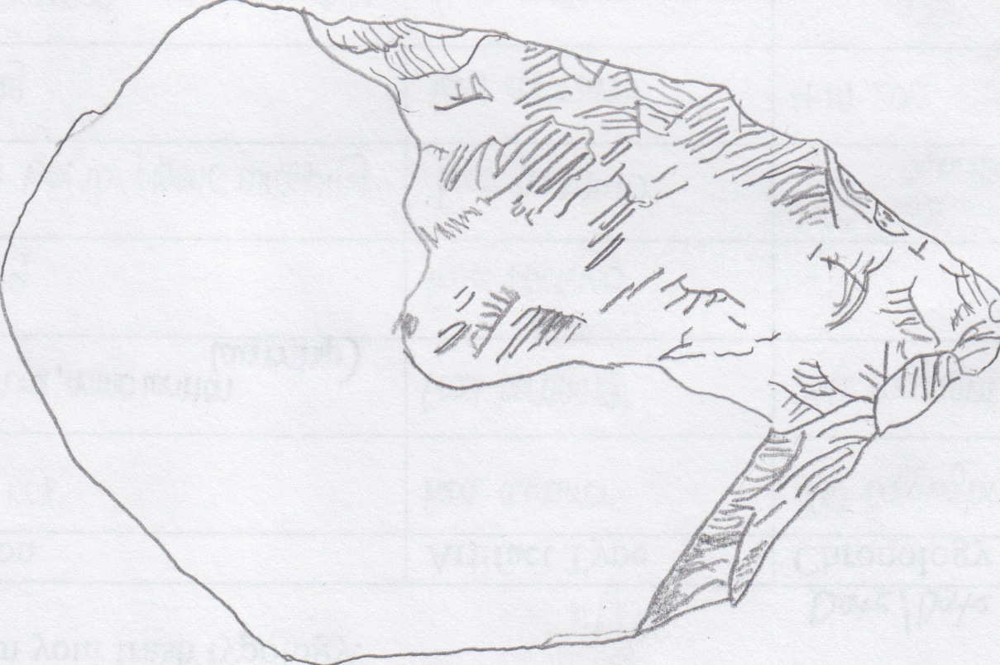
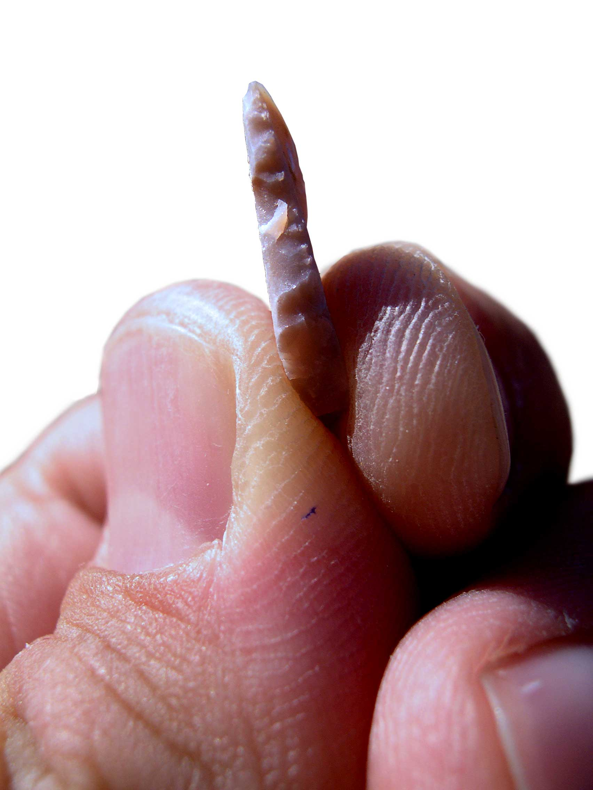
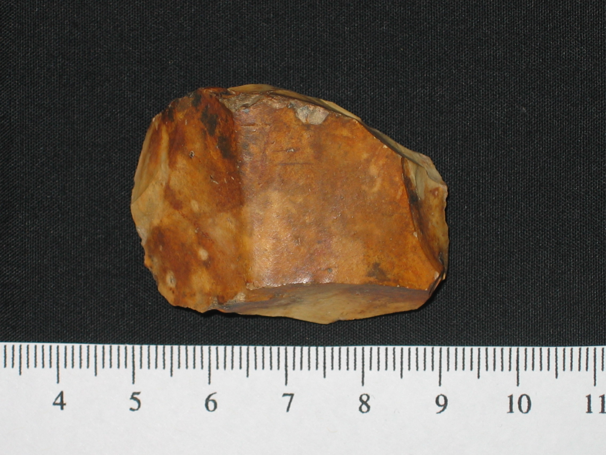
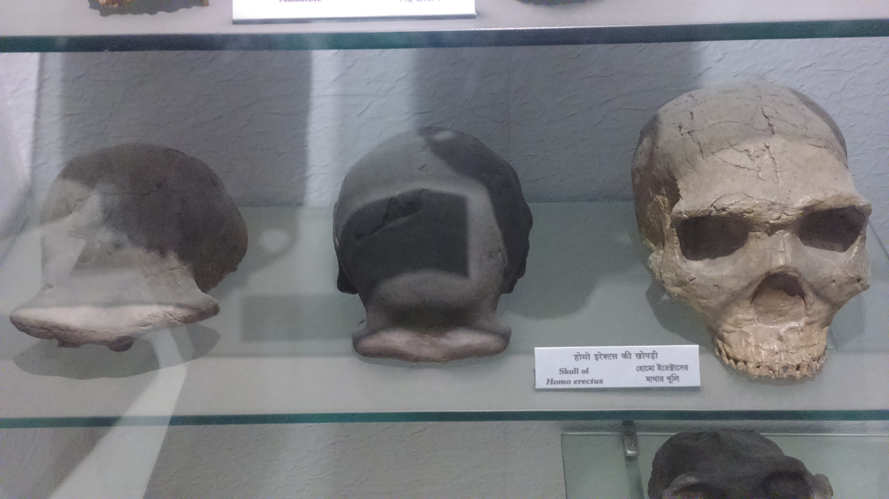
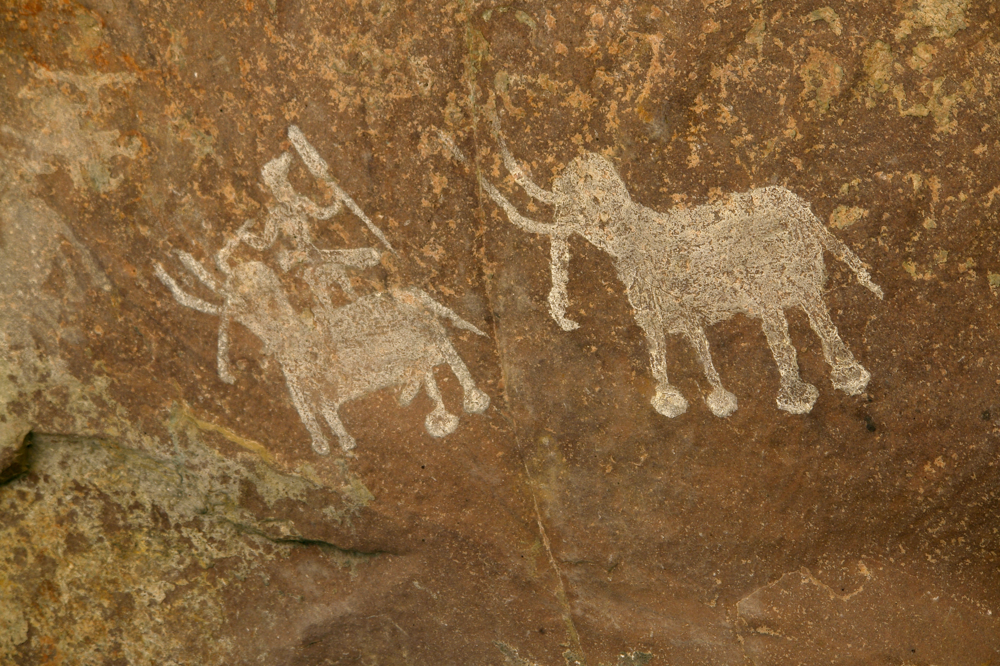

Prehistoric Foundations & Palaeoenvironmental Archive
Essential chronological, environmental, and technological archive of the Indian Subcontinent.
Photographic gallery of diagnostic lithic tool industries, fossil hominins, and rock art from the Indian Subcontinent. Click any card or the enlarge button to view high-resolution specimen plates.
Click any image to enlarge








Acheulian Bifacial Handaxe (Biface)
Lower Palaeolithic (1.5 Ma – 120 ka)Bifacially flaked core/large-flake implement with pointed or amygdaloid apex, sharp bilateral cutting edges, and rounded butt. Manufactured initially by block-on-block/hard hammer followed by soft hammer (billet) step retouch.
Direct stone hammer percussion, soft antler/wood cylinder hammer thinning, invasive flaking creating lenticular cross-section.
Attirampakkam (TN), Isampur (KA), Bhimbetka (MP), Didwana (RJ), Hunsgi (KA), Chirki-Nevasa (MH), Kuliana (OD).
Spatial GIS Map (EPSG:4326 WGS84)
Regional Geographical Distribution
104 SitesPrehistoric site concentration across major physiographic zones of the Subcontinent.
Master Prehistoric Site Registry
All 104 surveyed, explored, and excavated prehistoric sites across the Indian Subcontinent.
| Site Name | Period | State / Region | River Valley | Excavator(s) | Year | Diagnostic Typology | Coordinates | Action |
|---|